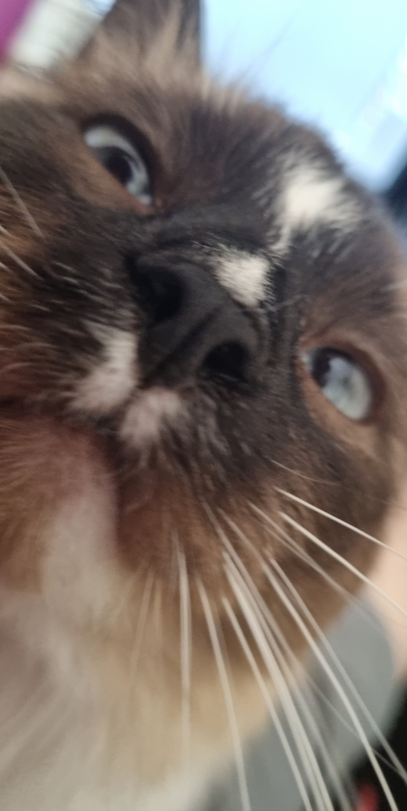
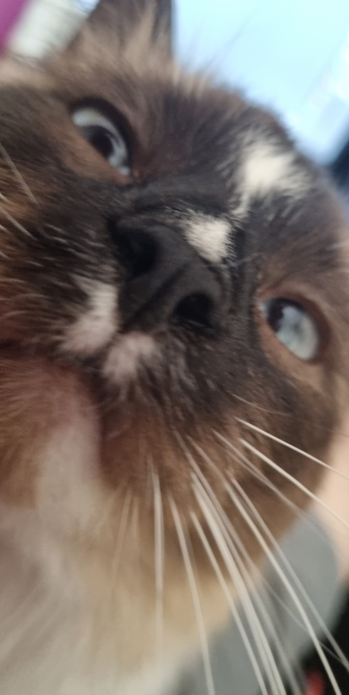
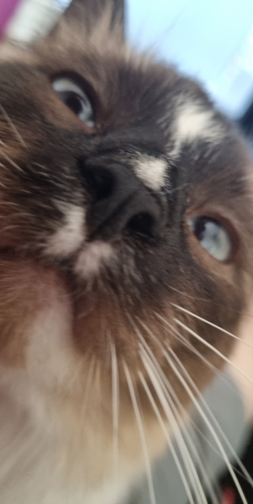

  from left to right, Toby, Holly, Marcus and finally myself(Tyler)
from left to right, Toby, Holly, Marcus and finally myself(Tyler)
hello everyone welcome to my website! be sure to check out My instagram and my youtube page
My name is Tyler Humbert or s3947682 if you want to keep it formal or something. I am from a small town in rural Victoria which only had around 400 residents, it only had 2 businesses, a supermarket and of course a pub. Due to the size of my town I had to go to secondary school in a different town called rochester which was around a half hour away. Naturally since i'm in IT i like video games (currently playing risk of rain 2) and have been playing them most of my life. I also have 4 pets back at home 2 cats, Marcus and Toby and 2 dogs, Bayley and Holly

from left to right, Toby, Holly, Marcus and finally myself(Tyler)